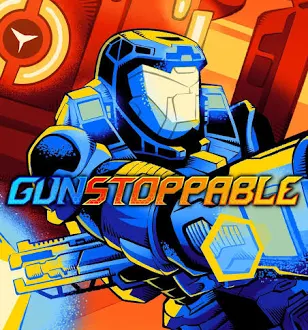

Hi there! My name is Lucas McGowan, at high school student and aspiring game developer.
This is the first game I have coded and independently worked on, the next step in my journey
after my previous experience with QA Testing for Cage Studio's game Gunstoppable.
I really hope you enjoy this current (essentially alpha) version of this game, but even
if you don't, this game will continue to be expanded upon and fleshed out, with the goal to
make it a 'real' indie game. I hope you will check back at some point, even if you didn't
love your first playthrough.
Thank you for your support, and please give feedback!
